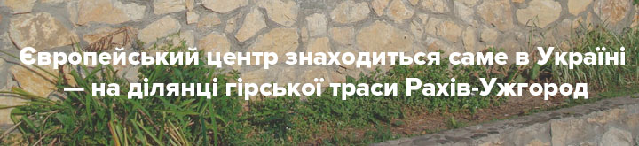
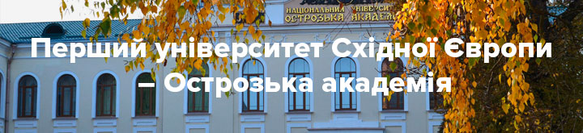
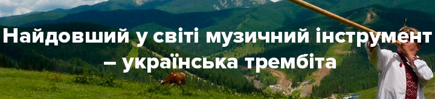
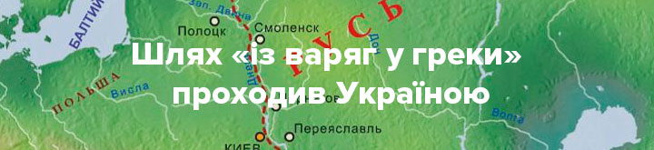

Факт №1

Хоч наша країна й розташована у Східній Європі, європейський центр знаходиться саме в Україні! На ділянці
звивистої гірської траси Рахів-Ужгород встановлений двометровий знак, що засвідчує географічний центр Європи.
1887 року (тоді Закарпаття належало Австро-Угорщині) з метою побудови залізної дороги інженери дізналися, що
десь у цій місцині має бути центр Європи. Запрошені віденські вчені підтвердили здогадки та встановили
геодезичний знак у вигляді бетонної плити, що засвідчував їхню знахідку.
Варто зазначити, однак, що наш центр Європи зовсім не єдиний. Гіпотетичний центр залежить від способу
вимірювання. Так, за сучасними вимірами, Угорщина, Естонія та Білорусь повноправно можуть стверджувати, що
серце Європи знаходиться й в їхніх країнах. За більш давніми вимірами, але не менш повноправно, про це можуть
заявляти Польща та Словаччина.
Факт №2
Найбільший та найпотужніший у світі літак було збудовано в Україні.Велетень Ан-225, також відомий як «Мрія», побудований у 1988 році на заводі імені Антонова. Літак внесено до Книги рекордів Гінесса за його 240 рекордів! Зараз Ан-225 орендують чимало країн світу задля вантажних перевезень, які не під силу жодному з існуючих наразі авіалайнерів, адже перевозить «Мрія» ні що інше, як пасажирські літаки! Декілька крил, хвости та фьюзеляжі — лише найменка частка вантажів, що їх транспортує Ан-225.
Факт №3
Найбільший та найпотужніший у світі літак було збудовано в Україні. Велетень Ан-225, також відомий як «Мрія», побудований у 1988 році на заводі імені Антонова. Літак внесено до Книги рекордів Гінесса за його 240 рекордів! Зараз Ан-225 орендують чимало країн світу задля вантажних перевезень, які не під силу жодному з існуючих наразі авіалайнерів, адже перевозить «Мрія» ні що інше, як пасажирські літаки! Декілька крил, хвости та фьюзеляжі — лише найменка частка вантажів, що їх транспортує Ан-225.
Факт №4
Станція метро «Арсенальна» — найглибша в світі. Її глибина становить 105, 5 м. Конструкція цієї станції так званого англійського типу – всередині станція має короткий зал, тобто відстань від ескалаторів до стіни невелика. Це єдина станція в українській столиці такого типу.
Факт №5
Видатний австрійський композитор Людвіг ван Бетховен присвятив дві симфонії українцеві. Ім’я щасливчика, на честь якого було створено два твори, – Андрій Розумовський, син останнього українського гетьмана. Андрій Кирилович Розумовський був гарним дипломатом і меценатом Бетховена. Майже все життя він провів у Відні, де й познайомився з композитором. Дружба між чоловіками стала причиною присвяти Андрієві Розумовському 5-ї та 6-ї симфоній.
Факт №6

Український «Южмаш» (Дніпропетровск) виробляє найекологічніші ракетоносії в усьому світі! З їхньою допомогою до косомосу відправляють комерційні рейси.
Факт №7
Перший університет Східної Європи – Острозька академія на Рівненщині. Академія була заснована 1576 року князем Василем Костянтиновичем Острозьким. Серед випускників академії —Гетьман Петро Конашевич Сагайдачний.
Факт №8
Перший університет Східної Європи – Острозька академія на Рівненщині. Академія була заснована 1576 року князем Василем Костянтиновичем Острозьким. Серед випускників академії —Гетьман Петро Конашевич Сагайдачний.
Факт №9
Українська трембіта — це гуцульський духовий інструмент, що входить до Книги рекордів Гінесса. Спершу трембіту використовували зовсім не для музики, а як засіб зв’язку чабана із селом. Також за допомогою трембіти попереджали про небезпеку: особливі комбінації звуків попереджали гуцулів про лихо.
Факт №10

Чули про шлях «із варяг у греки»? Він проходив Україною і був одним із найбільших торгових водних шляхів. Мав
протяжність 3 000 км, поєднував північ Київської Русі та Візантію.
Цей шлях пролягав від Варязького (Балтійського) моря Фінською затокою по ріці Неві Ладозьким озером, далі
річкою Волховом, озером Ільмень, рікою Ловаттю, потім волоком човнами до Дніпра, вплав на р. Дніпрі, потім
Руським (Чорним) морем уздовж західного берега до Царгороду (тепер Стамбул). Також маршрут ними мінявся —
уздовж Одри до Кракова в Галичину через Звенигород, Пліснеськ, Галич.